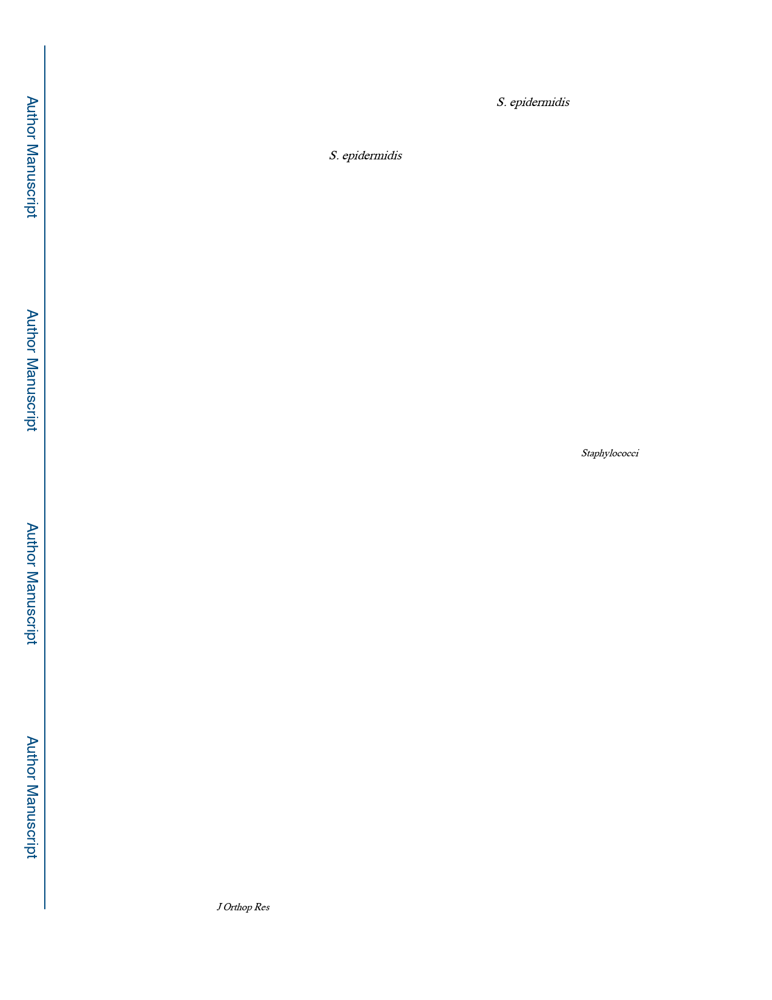

Tomizawa et al.
Page 10
a long-term follow-up; only SEM was observed at 42 days. This is important, as the
differential diagnosis between clinical aseptic loosening and S. epidermidis infection can
only be established after long-term follow-up from the initial surgery. Furthermore, recent
reports describe that more than half of the implant removed from healthy patients were
culture or PCR positive for S. epidermidis.42
In summary, we found biofilm-producing RP62A is incapable of directly inducing the
prominent pathological features of implant-associated osteomyelitis, including osteolysis,
reactive bone formation and marrow ablation. However, RP62A can be considered
pathogenic in orthopaedic settings, as it can persist in biofilm on the implant, and stimulates
a pro-inflammatory environment and incomplete osseous integration of the implant. Thus,
these results support a role for RP62A in implant loosening, as the bacteria can form small
amounts of biofilm that inhibit osseous integration and bone healing. Therefore, RP62A
should be considered as a low-grade pathogen of osteomyelitis, especially in implant
associated cases and asymptomatic implant loosening.
Supplementary Material
Refer to Web version on PubMed Central for supplementary material.
ACKNOWLEDGMENTS
The authors would like to thank Drs. Paul Dunman and Steven Gill for providing us with several Staphylococci
strains, Gayle Schneider for technical assistance with the electron microscopy sample preparations. We also show
gratitude Keiko Furuta and Haruyasu Kohda for practical support in electron microscopy. This study was supported
by Grant-in-Aid for Research Activity start-up (16H06906), ISHIZUE 2017 of Kyoto University Research
Development Program, 2017 Research grant of Fujiwara Memorial Foundation, this study was also supported by
NIAMS/NIH grants P30AR069655 and P50AR072000, and the AOTrauma Clinical Priority Program.
REFERENCES
1. Schwarz EM, Parvizi J, Gehrke T, et al. 2019 2018 International Consensus Meeting on
Musculoskeletal Infection: Research Priorities from the General Assembly Questions. J. Orthop.
Res. 37(5):997–1006 [PubMed: 30977537]
2. Saeed K, McLaren AC, Schwarz EM, et al. 2019 2018 international consensus meeting on
musculoskeletal infection: Summary from the biofilm workgroup and consensus on biofilm related
musculoskeletal infections. J. Orthop. Res. 37(5):1007–1017. [PubMed: 30667567]
3. Goetz C, Tremblay YDN, Lamarche D, et al. 2017 Coagulase-negative staphylococci species affect
biofilm formation of other coagulase-negative and coagulase-positive staphylococci. J. Dairy Sci.
100(8):6454–6464. [PubMed: 28624271]
4. Kourbatova EV., Halvosa JS, King MD, et al. 2005 Emergence of community-associated
methicillin-resistant Staphylococcus aureus USA 300 clone as a cause of health care-associated
infections among patients with prosthetic joint infections. Am. J. Infect. Control 33(7):385–391.
[PubMed: 16153484]
5. Teterycz D, Ferry T, Lew D, et al. 2010 Outcome of orthopedic implant infections due to different
staphylococci. Int. J. Infect. Dis. 14(10):e913–e918. [PubMed: 20729115]
6. Bradbury T, Fehring TK, Taunton M, et al. 2009 The Fate of Acute Methicillin-Resistant
Staphylococcus aureus Periprosthetic Knee Infections Treated by Open Debridement and Retention
of Components. J. Arthroplasty 24(6 SUPPL):101–104.
7. Bassetti M, Trecarichi EMM, Mesini A, et al. 2012 Risk factors and mortality of healthcare-
associated and community-acquired Staphylococcus aureus bacteraemia. Clin. Microbiol. Infect.
18(9):862–869. [PubMed: 21999245]
J Orthop Res. Author manuscript; available in PMC 2021 April 01.